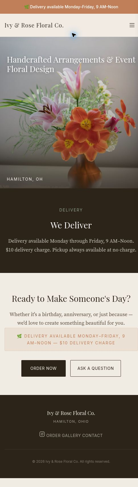

Custom websites / Made for your business
“People keep asking
what we offer.”
A website should help people understand what you do and feel confident taking the next step. We bring your story, your work, and that customer journey together.
Talk about your website
In your customer’s hand.

Scope follows the need.
Built around
the next step.
A clear story.
Content and page structure that explain your business without making visitors hunt for the important details.
A useful way forward.
The right contact, enquiry, gallery or booking path for the project. We agree on what belongs before building.
Every screen considered.
Responsive layouts, readable content, and checks on the customer paths that matter.
Made with you.
A conversation.
A clear plan.
Something useful.
- Tell us what’s getting in the way.
We start with your business, your customers, and the thing you want to work better.
- See the direction before launch.
Review the design together and refine it within the scope we agree on.
- Know what happens next.
Check the important paths, plan the launch, and agree on the support you need.
After the launch
A clear handoff.
Support that fits.
We’ll talk through what you want to manage yourself and where you’d like help. Content updates, site care, and practical improvements can be discussed as part of your plan.
Scope, timing, cost and ongoing support are agreed together. We’ll choose the arrangement that fits your business.